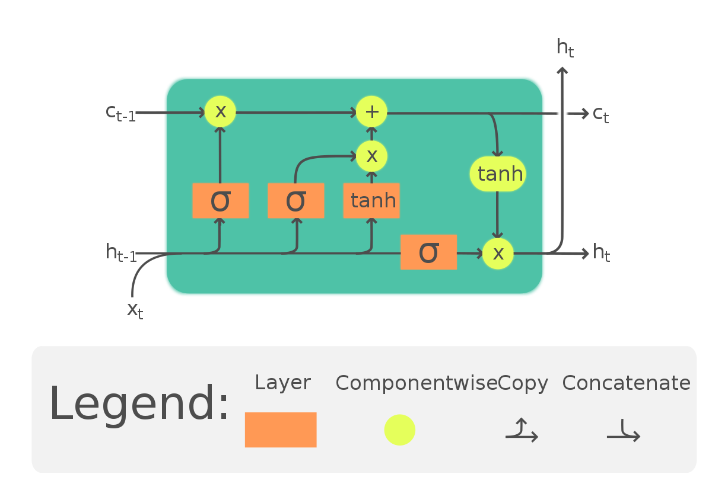
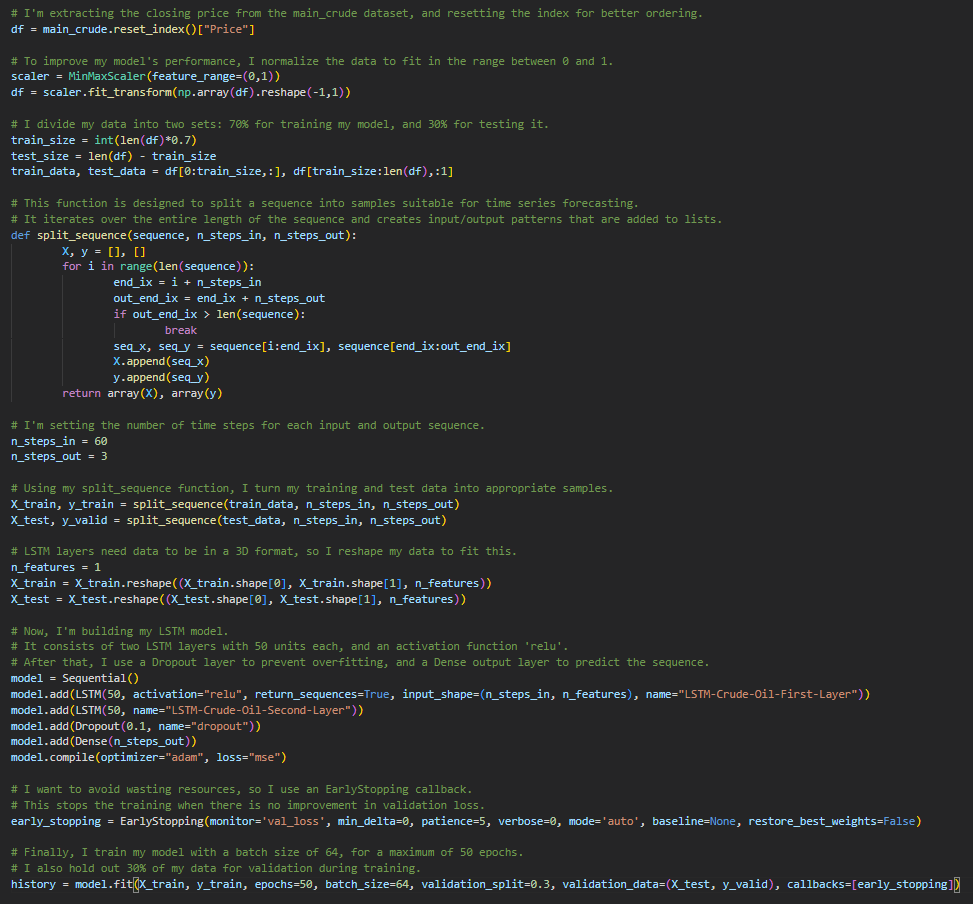
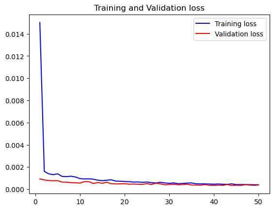
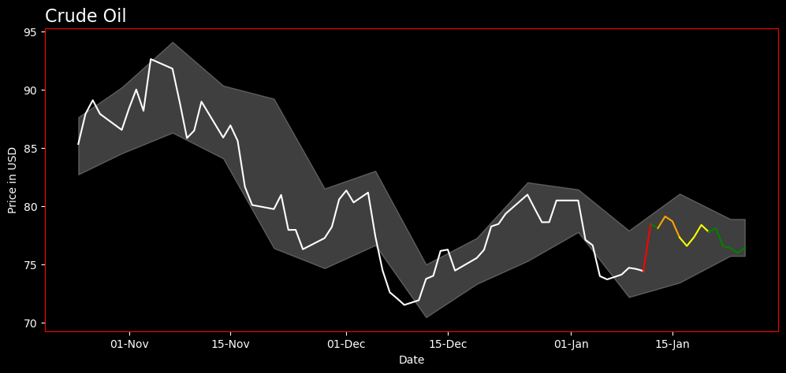

Crude Oil Price Forecasting
Published: 07.05.2023
In my quest to forecast the future price of Crude Oil WTI for the next 14 days, I ventured into multiple stages of data analysis and model building. The entire project employed a range of Python tools such as Pandas for data manipulation, Beautiful Soup for web scraping, and Keras Tensorflow to build a LSTM model for price prediction. The aim was to provide a 95% confidence interval taken from weekly price differences, transformed into log-normal values. The forecasted prices (today + 13 days ahead) were then represented in different colors from the historical prices based on their deviation from the standard.
Web Scraping With BeautifulSoup
The first stage of this project was data gathering. To this end, Beautiful Soup was the tool of choice for its ability to scrape web data. The Python library provides a few simple methods and Pythonic idioms for navigating, searching, and modifying a parse tree. I used it to obtain historical Crude Oil WTI price data, which was saved as a CSV file for ease of manipulation in the later stages
Preprocessing and Exploring the Data
Upon acquiring the data, the next step was to preprocess and explore it. I loaded the dataset, trimmed it to only contain data until the last closed price, and then created a copy to commence with exploratory data analysis. With the goal of understanding weekly price trends, I transformed this copy to only reflect prices and their corresponding day names, and then selected entries corresponding to Mondays. From here, weekly price differences were calculated and transformed to log-normal distributions. These procedures gave me key insights into mean and standard deviations of log-normal distributions of weekly price changes.
Long Short-Term Memory (LSTM)

The heart of this project lies in the application of LSTM (Long Short-Term Memory) model, a type of recurrent neural network well-suited to classify, process, and predict time series given time lags of unknown durations. Unlike traditional feedforward neural networks, LSTM has feedback connections that make it a “general purpose computer.” It can not only process single data points (like images), but also entire sequences of data.
Build LSTM Model Architecture
First, I extracted the ‘Price’ column from the dataset then scaled the prices using the MinMaxScaler in order to normalize them to fall within the range of 0 to 1. I then split the data into train and test sets, with 70% of the data used for training and 30% for validation. The data was then reshaped and split into sequences to be compatible with the LSTM model. Each sequence consisted of 60 timesteps as inputs and predicted the next 3 timesteps.
Once the data was properly formatted, I built the LSTM model. The model consisted of two LSTM layers, the first with 50 nodes and ‘relu’ activation function, and the second with 50 nodes. I also included a Dropout layer with a rate of 0.1 to prevent overfitting, and a Dense output layer predicting the next three time steps. I chose the ‘adam’ optimizer and mean squared error as the loss function, which is a standard choice for regression problems.
I also utilized the EarlyStopping callback from Keras during model training. This stopped the training process when the model’s performance on the validation set stopped improving, preventing overfitting and saving computational resources.

Training Observations:
- Decreasing Loss: The loss (mean squared error, judging by the values) decreases consistently over the epochs. This indicates that the model’s predictions are getting closer to the true values with each epoch.
- Validation Loss: The validation loss is also decreasing and is actually lower than the training loss, suggesting that the model is not overfitting and is generalizing well to unseen data.
- Overfitting: There’s no clear evidence of overfitting as the validation loss is not increasing while the training loss is decreasing. This is a good sign as it means the model should perform well on new, unseen data.

After training the model, I used it to predict future crude oil prices. The trained LSTM model took the last 60 days of scaled price data as input and generated predicted price data for the next 14 days. These predictions were then reverse-scaled back to their original price range for interpretation and analysis.

Confidence Intervals and Visualization
The final steps involved the calculation of daily price differences on the concatenated dataset, followed by the construction of a 95% confidence interval for these prices. After determining the weekly standard deviation and mean of prices, the interval was calculated using the scipy.stats norm.interval function, which takes the level of confidence, the mean, and the standard deviation as parameters. The lower and upper limits of the interval were then added as new columns to the dataset. This information was critical in understanding the model’s certainty in its predictions.
The color-coding scheme was applied to distinguish between historical and forecasted prices. Historical prices were marked in black. For forecasted prices, a custom function was created that determines color based on the number of standard deviations the price change represents, using green, yellow, orange, and red to denote the respective ranges. Finally, the resulting visualization data was prepared for exporting, providing a complete and color-coded visualization of historical and forecasted Crude Oil WTI prices.

You can view the complete code and project process on this GitHub repository.